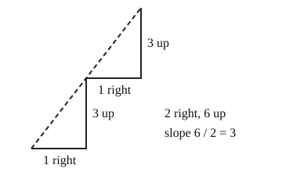

Part of Straight Lines From Two Points. Answer in the chat (1: ..., g: c), add sure or guess after any answer, and say done when finished.
Help is now 3: each lesson traces a worked example before the questions.
Last time: a line goes up 6 while it goes 2 to the right. How far up for each one step right? You said a) 3, and it is.

To say how steep a line is, you want one number that stays the same however long a piece of the line you look at. Slope is that number: rise over run, how far the line goes up for each one step right (notes 1). A line that goes down to the right has a negative rise, so a negative slope.
m = rise / run
Worked example: up 6 over 2 to the right.
Q1. A line rises 10 over a run of 5. What is its slope?
2
Right: 10 / 5 = 2 (notes 1).
Q2. A line goes from (0, 0) to (4, 2). What is its slope?
4 across and 2 up, so 4/2 = 2 (sure)
You wrote "4 across and 2 up, so 4/2 = 2". Trace it one step at a time:
- from x = 0 to x = 2, the line climbs 1
- from x = 2 to x = 4, it climbs 1 more
So for one step right, how far up does it go? (notes 1)
up 2 for 4 across, so 2/4 = 1/2
Right: now the rise is on top, 2 up over 4 across (notes 1).
Q3. In your own words: why does a line that goes down to the right have a negative slope?
going right it goes down, so the rise is a minus number, and a minus over a plus is a minus
Right: the rise is negative and the run is positive (notes 1).
You can now find a slope from a rise and a run.
A line goes through (1, 3) and (5, 11). What is its slope?
a (guess)